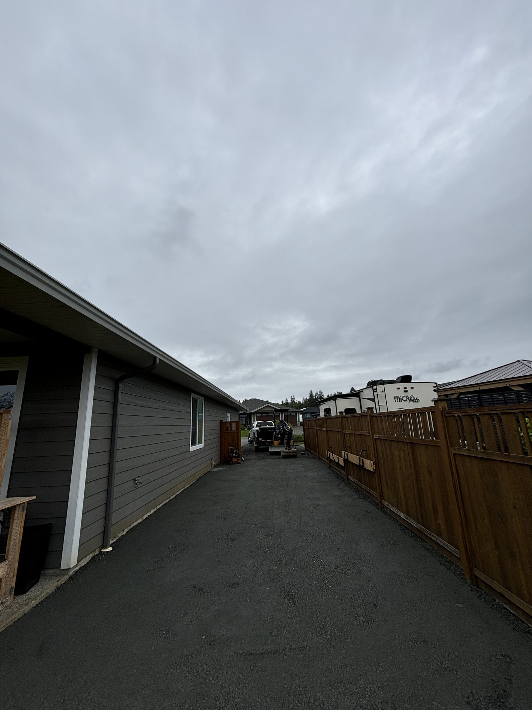
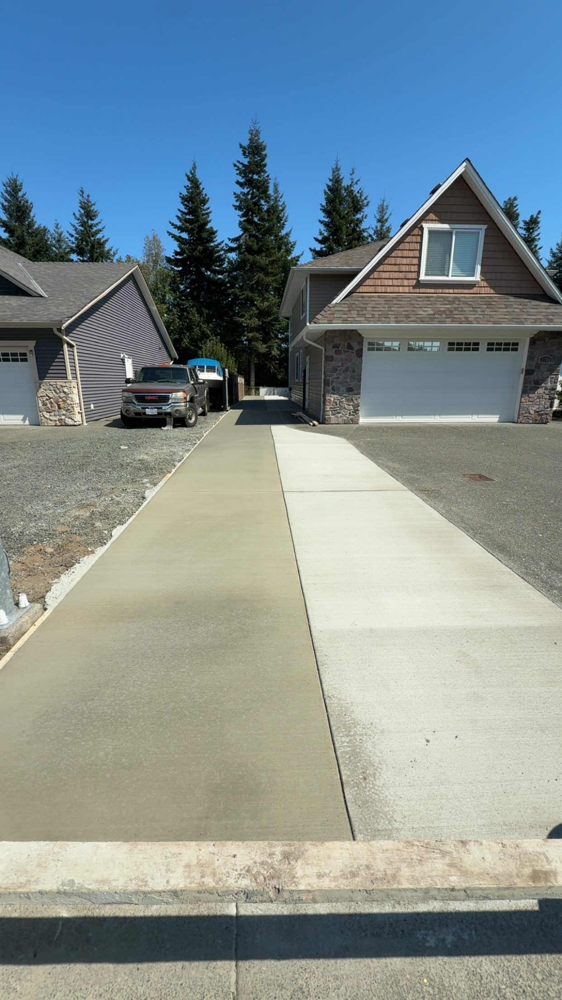
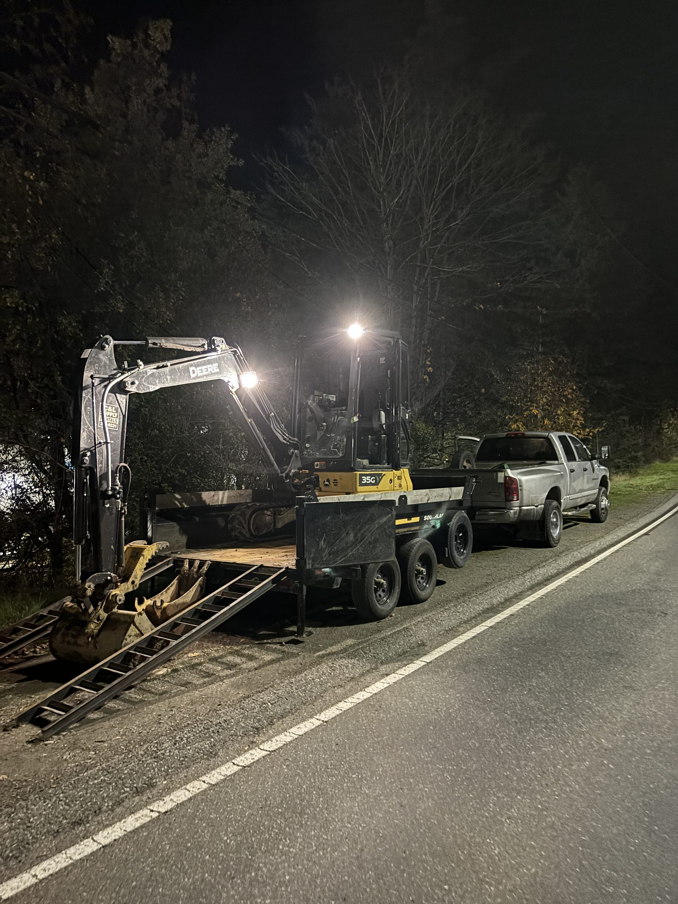

Backyard Overhaul
A steep, bare hillside turned into a finished family backyard. Terraced with natural boulder walls and finished with sod and a play area.

Parking Pad & Retaining Wall
A raised parking pad built from scratch with a multi-course block retaining wall. Solid enough to park an RV on.

Tiered Retaining Wall & Patio
A full hardscape build on a steep lot — multiple tiered walls, formed concrete, stone steps, and a finished patio space.

Natural Boulder Retaining Wall
A failing wall replaced with a proper natural boulder wall built from blast rock. Looks like it's always been there.

Retaining Wall Replacement
An old, leaning wall torn out and replaced with a new block retaining wall. Holds three to four feet of grade across the property.

Side Yard Makeover
An overgrown, useless side yard turned into a clean access strip with a stone wall and finished gravel.

Backyard Restoration
A lumpy, weed-filled yard scraped to bare dirt, topped with fresh topsoil, and finished with hydroseed for a clean green lawn.

Residential Land Clearing
A backyard swallowed by years of overgrowth, cleared and reclaimed. Customer got back over half their yard.

Exposed Aggregate Driveway
A driveway extension poured with exposed aggregate concrete. Durable, low-maintenance, and looks sharp.

Gravel Driveway Extension
A side-yard gravel driveway extension built to give the customer back-property access for their RV.

Concrete Driveway Addition
A clean concrete driveway pour, tied right into the existing site. Smooth finish, ready for years of use.

Winding Concrete Pathway
A custom concrete pathway that meanders through a residential garden, tying the front and back of the property together.

Raised Block Garden Beds
Custom raised garden beds built to plant trees in. New concrete footings, stacked block, and clean topsoil.

Emergency Sewer Repair
A Friday night call about a busted sewer line at an apartment building. We were on site by sunrise. Repaired before end of day.

Institute Infrastructure Upgrade
A multi-phase infrastructure upgrade — access road, site grading, utility tank install, and a structural lock-block retaining wall.